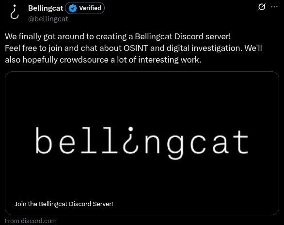

In May 2020, Bellingcat created its Discord server. The announcement, seen above, was posted later that same day. Your task is to determine how many minutes passed between the server's creation and the official annoucement on Twitter (answer format: 87).
